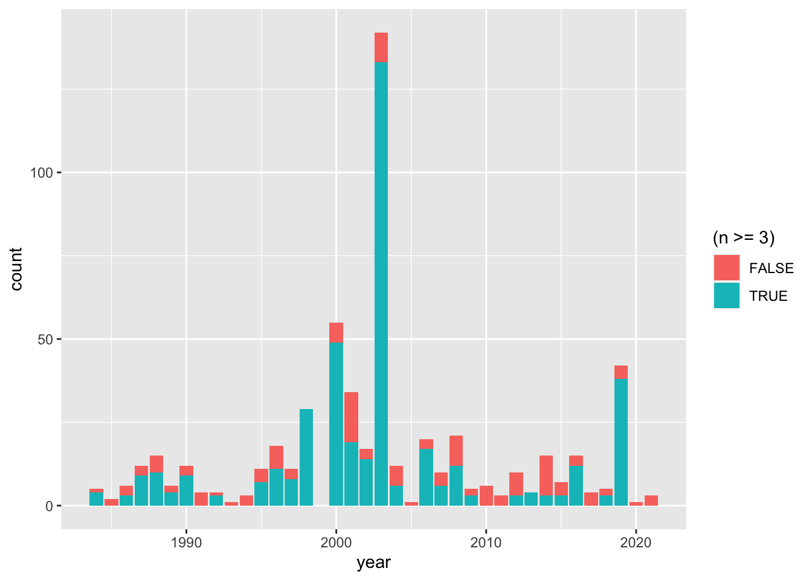

Data Analysis for When Does Lethal Repression Fail?
This page is supplementary material to Carwil Bjork-James’s article, “When does lethal repression fail? Unarmed militancy and backfire in Bolivia, 1982–2021,” to be published in the Journal of Latin American Studies.
All queries and data tables referenced in the article are compiled in WLRF-Tables.Rmd in the Ultimate Consequences package on GitHub, using the database as constituted on May 12, 2022. A copy of the database on that date is archived for reproducibility of the analysis as data/deaths-entries-2022-05-12.rds. Access is currently available to researchers on request and will be incorporated into the forthcoming public release of the dataset. The queries, data tables, and code used to create them are published online at https://ultimateconsequences.github.io/WLRF-Tables.html.
This document is designed to enable transparency and reproducibility of our research results. By specifying our search criteria for relevant cases, explaining exceptions, and embedding our analysis techniques in R scripts that use the database, we document our choices and create tools that can automatically update results when additional cases are uncovered, errors are corrected, or new information is brought to light. Archiving and versioning of the database and these tools allows other researchers to both reproduce our results, and test their robustness against different choices in coding or analysis.
This document is divided into two parts. Unless you are attempting to reproduce our results from the dataset, feel free to skip over Preparatory Code Blocks, and begin reading at Calculations and Queries Used in the Article. The embedded code blocks can be read by clicking on the triangles next to the word “Code.”
For more information about the Ultimate Consequences research project, database, and future testimonial archive, head to our Project Overview page.
Preparatory Code Blocks
The following sections show all code in R needed to read and process the database. It is included here to allow researchers using R to reproduce the analysis from an archived copy of the dataset. Similarly, text below documents the standard importing, filtering, and processing of the data.
Importing data
Deaths are imported from the Google Sheet using your standard import process.
This code segment applies a set of standard filters:
Culling out currently inactive variables using
selectSegmenting out parenthetical annotations using
separate:Answer (explanation)is split into two separate variables, the first holding a categorical variable, and the second holding the corresponding notes.- Filtering, using
filter, to remove the following cases: -
unconfirmedis a flag for deaths in range of death totals. So if there were “five to eight people killed,” the last three deaths have TRUE inunconfirmed.
-
- We also filter out “Collateral” and “Nonconflict Accident” cases in
Intentionality. These cases are both peripheral to some of the purposes of the database. Significantly for comparisons over the long-term, we think that these kinds of deaths are unevenly distributed over time.
- We also filter out “Collateral” and “Nonconflict Accident” cases in
- Filtering, using
Throughout this process, we are creating two parallel variables, one that includes all the deaths recorded in the database and a second that is filtered down to what we will call “confirmed” and intentional deaths. In this block of code those are called de and def. Later they will be caled deaths_unfiltered and deaths. Using two variables allows us to output ranges of uncertainty inside our tables.
Code
live.import <- FALSE
live.import.es <- FALSE # The event status table is relatively volatile,
# so only switch this on when we need new outcome data
de.filename <- "data/deaths-entries-2022-05-12.rds"
pt.filename <- "data/presidents-table-2022-05-03.rds"
es.filename <- "data/event-status-2022-05-14.rds"
use.current.archive <- FALSE # This flag should be set to true when
# the above filenames do not have a date
use.current.es.archive <- FALSE # This flag should be set to true when
# es.filename does not have a dateCode
library(here)
source(here::here("src","01-import.R"), local = knitr::knit_global())Re-coding 2019 data
Here we manually recode the 2019 deaths into events several ways. As the article explains:
The complex series of events poses delicate questions about lumping or splitting deaths. I opted to characterize the anti-Morales protest wave (which coincided with counterprotests in support of the president) as one event up to his November 10 resignation (in Quadrant 4). … The violence that followed Morales’ pressured resignation (on November 10–13) in various locations forms a second event (in Quadrant 2)… I also chose to treat the Sacaba and Senkata massacres of November 15 and 19 as two further events of one-sided state repression (Quadrant 1). An alternate approach would have clustered all of the violence after Morales’ resignation into a single event (in Quadrant 2) in which security forces caused at least 26, and as many as 29 deaths, while suffering the loss of two of their number. In the supplementary materials, I include a robustness analysis that how these categorisation choices have only small effects on the overall outcomes of the study.
This block of code groups events during the crisis. In all versions of the analysis, events before Evo Morales’ resignation are merged. If merge_regional_post_resignation is set TRUE, post-resignation events grouped by place. If merge_all_post_resignation is set TRUE, all post-resignation events are grouped into a single event.
Code
## First gather all pre-resignation deaths into one event
cluster.2019.explanation <- paste("**2019 Event Handling:**")
de <- de %>% mutate(event_title = case_when(
event_title=="La Paz pro-Evo election march" ~ "Pre-resignation protests",
event_title=="Montero election clashes" ~ "Pre-resignation protests",
event_title=="Metro Cochabamba election clashes" ~ "Pre-resignation protests",
event_title=="La Paz journalist beaten to death" ~ "Pre-resignation protests",
TRUE ~ event_title
))
cluster.2019.explanation <- paste(cluster.2019.explanation,
"Pre-resignation events merged.", sep=" ")
## Next gather all early post-resignation deaths (November 10-13) into one a second event event
merge_regional_post_resignation <- FALSE # flag; change to TRUE for robustness check
merge_all_post_resignation <- FALSE # flag; change to TRUE for robustness check
if(merge_regional_post_resignation){
de <- de %>% mutate(event_title = case_when(
event_title=="La Paz post-resignation violence"
~ "Metro La Paz post-resignation (combined)",
event_title=="Senkata Massacre" ~ "Metro La Paz post-resignation (combined)",
event_title=="Metro Cochabamba post-resignation violence" ~ "Metro Cochabamba post-resignation (combined)",
event_title=="Sacaba massacre" ~ "Metro Cochabamba post-resignation (combined)",
event_title=="Sacaba Massacre" ~ "Metro Cochabamba post-resignation (combined)",
TRUE ~ event_title
))
cluster.2019.explanation <- paste(cluster.2019.explanation, "Post-resignation events grouped by place.", sep=" ")
}else{
de <- de %>% mutate(event_title = case_when(
event_title=="La Paz post-resignation violence" ~ "Post-resignation protests",
event_title=="Metro Cochabamba post-resignation violence" ~ "Post-resignation protests",
event_title=="Betanzos post-resignation violence" ~ "Post-resignation protests",
event_title=="Montero post-resignation clash" ~ "Post-resignation protests",
event_title=="Yapacaní post-resignation clash" ~ "Post-resignation protests",
TRUE ~ event_title
))
if(!merge_all_post_resignation){
cluster.2019.explanation <- paste(cluster.2019.explanation,
"Early post-resignation events (November 10-13) merged.", sep=" ")
}
}
if(merge_all_post_resignation)
{
de <- de %>% mutate(event_title = case_when(
event_title=="Post-resignation protests" ~ "Post-resignation protests (inclusive)",
event_title=="Sacaba massacre" ~ "Post-resignation protests (inclusive)",
event_title=="Sacaba Massacre" ~ "Post-resignation protests (inclusive)",
event_title=="Senkata Massacre" ~ "Post-resignation protests (inclusive)",
event_title=="Metro Cochabamba post-resignation (combined)" ~ "Post-resignation protests (inclusive)",
event_title=="Metro La Paz post-resignation (combined)" ~ "Post-resignation protests (inclusive)",
TRUE ~ event_title
))
cluster.2019.explanation <- paste(cluster.2019.explanation, "All post-resignation events merged.", sep=" ")
}Factoring variables
The presidential administration variable is made into an ordered factor.
We shrink the imported data by only including relevant columns.
Our code makes some assumptions about the data, particularly that no case labeled as by a state perpetrator or with a state victim is also coded as collateral (caused by the indirect effects of a nonviolent action) or as a nonconflict death. If any of these numbers are nonzero, those assumptions are violated.
- State perpetrator AND collateral; 0
- State victim AND collateral: 0
- State perpetrator AND nonconflict: 0
- State victim AND nonconflict: 0
Calculate summary table by events
This section and the next produce a event table that merges information from the filtered and unfiltered death data, as well as event outcome data included in the “Event Status” page of the database.
We can create summary tables by any variable or combination of variables. Here we use:
event_title— The name of the event, which should be a unique identifierprotest_campaign— the larger protest campaign it was a part ofyear— the year the death occurred in.
As event_title uniquely identifies an event, summarizing by it alone should be enough, but including all three lets us check for accidentally naming two different events by the same name.
We can combine group_by and summarize to generate a variety of counts for each event. Here are the counts we create.
Some are generated from the filtered list of deaths, deaths and put in the table campaign.events
n— Number of (filtered) deathsn_state_perp— Number of deaths perpetrated by state security forces.n_state_victim— Number of deaths with a state victim, not counting accidental or incidental deaths.n_state_separate— Number of deaths happening separate from state involvement
Others are generated from the unfiltered list of deaths, deaths_unfiltered and put in the table campaign.events_unfiltered
n_unconfirmed— Number of unconfirmed deaths (whethe total number reported is a range)n_collateral— Number of collateral deaths (caused indirectly by nonviolent actions)n_nonconflict— Number of nonconflict deathsn_state_perp_hi— A higher estimate of the number of deaths perpetrated by state security forces, including otherwise filtered out plus cases where the state’s responsibility is disputed.n_state_victim_hi— A higher estimate of the number of deaths with a state victim, including deaths otherwise filtered out.n_state_separate_hi— A higher estimate of the number of deaths separate from the state, including deaths otherwise filtered out.n_unfiltered— the grand total of all deaths associated with the event in the database
Next we merge these two events tables using join functions. We will use “key” columns in campaign.events to make this join, but this means we leave out events that only appear in campaign.events_unfiltered. As a check, we perform an “anti_join” and save the ignored events into campaign.events_disqualified. Inspecting that list, we see no events with three or more deaths, so we can move on.
The joined table is called campaign.events_joined.
We’re only interested in the _hi variables where they differ from the established value, so we use a mutate command to blank the values when they are the same.
Next we import information from the database about the outcomes of each events (stored in a second sheet of the Google Sheet). We use this information, stored in event.status.relevant to specify the outcomes of each event. We also add information on the domain of protest and current presidential administration from the deaths table itself. (Anomalous events which occur across multiple presidencies have to be dealt with in the code here.)
Finally, we create campaign.events_joined3 which only includes events with three or more deaths. We also spin off def.count, a simplified table of deaths that includes the number of deaths per event in the final column.
Code
# create an event count by title that also counts the number of state perpetrator
# and state victim deaths
#
# This code separates out incidental/accidental state victim deaths
#
campaign.events <- deaths %>% group_by(protest_campaign, event_title, year) %>%
summarize(
n = n(),
n_state_perp = sum(state_perpetrator=="Yes", na.rm = TRUE),
n_state_victim = sum(str_detect(state_responsibility, "^State victim") & # detect State victim only at beginning of string
!str_detect(intentionality, "cident"), na.rm = TRUE),
n_state_separate = sum(str_detect(state_responsibility, "Separate from state"), na.rm = TRUE)
)
campaign.events_unfiltered <- deaths_unfiltered %>% group_by(protest_campaign, event_title, year) %>%
summarize(
n_unconfirmed = sum(unconfirmed =="TRUE", na.rm = TRUE),
n_collateral = sum(intentionality == "Collateral", na.rm = TRUE),
n_nonconflict = sum(str_detect(intentionality, "Nonconflict"), na.rm = TRUE),
n_state_perp_hi = sum((state_perpetrator=="Yes" | state_perpetrator == "Disputed" |
state_perpetrator=="Likely Yes" | state_perpetrator=="Presumed Yes" |
state_perpetrator == "Indirect"),
na.rm = TRUE),
n_state_victim_hi = sum(str_detect(state_responsibility, "^State victim"), na.rm = TRUE),
n_state_separate_hi = sum(str_detect(state_responsibility, "Separate from state"), na.rm = TRUE),
n_unfiltered = n()
)
campaign.events_unfiltered3 <- filter(campaign.events_unfiltered, n_unfiltered>=3)
campaign.events3 <- filter(campaign.events, n>=3)
campaign.events_disqualified <- anti_join(campaign.events_unfiltered, campaign.events, by=c("protest_campaign", "event_title", "year"))
# This table lists events that meet the minimum of three in the unfiltered list,
# but not when filters are applied
campaign.events_disqualified3 <- anti_join(campaign.events_unfiltered3, campaign.events3, by=c("protest_campaign", "event_title", "year"))
# merge the event/campaign table with the corresponding data from the unfiltered counts
campaign.events_joined <- campaign.events %>%
left_join(campaign.events_unfiltered, by = c("protest_campaign", "event_title", "year")) %>%
select(protest_campaign, event_title, year, n, n_state_perp, n_state_perp_hi,
n_state_victim, n_state_victim_hi,
n_state_separate, n_state_separate_hi,
everything())
# blank the high values if they are the same as the low values…
campaign.events_joined <- campaign.events_joined %>%
mutate(n_state_perp_hi = ifelse(n_state_perp_hi==n_state_perp, NA, n_state_perp_hi)) %>%
mutate(n_state_victim_hi = ifelse(n_state_victim_hi==n_state_victim, NA, n_state_victim_hi)) %>%
mutate(n_state_separate_hi = ifelse(n_state_separate_hi==n_state_separate, NA, n_state_separate_hi))
# select information from the event status table, then join it into the campaign/events table
event.status.relevant <- event.status %>% select(event_title, year, outcome, outcome_summary)
campaign.events_joined2 <- campaign.events_joined %>%
left_join(event.status.relevant, by = c("event_title", "year")) %>%
select(event_title, year, protest_campaign, n, n_state_perp, n_state_perp_hi,
n_state_victim, n_state_victim_hi,
outcome, outcome_summary)
event.domain <- select(def, event_title, year, protest_domain, pres_admin) %>%
mutate(pres_admin = replace(pres_admin,
event_title == "Metro Cochabamba post-resignation violence",
"Jeanine Áñez")) %>% # deal with anomalous two-presidency case
unique()
campaign.events_joined2 <- event.domain %>%
right_join(campaign.events_joined2, by = c("event_title", "year")) %>%
select(event_title, year, protest_campaign, n, n_state_perp, n_state_perp_hi,
n_state_victim, n_state_victim_hi,
outcome, outcome_summary, everything())
# I used this diagnostic code to find anomalies, and fix most of them.
#
# unique(select(def, event_title, year, protest_domain, pres_admin)) %>%
# group_by(event_title) %>%
# summarize(count = n()) %>%
# filter(count > 1)
#
# unique(select(def, event_title, year, protest_domain, pres_admin)) %>%
# filter(event_title == "MPS politician assassinated")
#
## Anomalous case: "Metro Cochabamba post-resignation violence"
# (two presidencies)
# deal with anomalous double row for "Post-resignation protests"
#
if (sum(campaign.events_joined2$event_title=="Post-resignation protests")>1){
campaign.events_joined2 <- campaign.events_joined2 %>%
filter(!((event_title=="Post-resignation protests")&(pres_admin=="Jeanine Áñez")))
}
if (sum(campaign.events_joined2$event_title=="Metro La Paz post-resignation (combined)")>1){
campaign.events_joined2 <- campaign.events_joined2 %>%
filter(!((event_title=="Metro La Paz post-resignation (combined)")&(pres_admin=="Interim military government")))
}
if (sum(campaign.events_joined2$event_title=="Metro Cochabamba post-resignation (combined)")>1){
campaign.events_joined2 <- campaign.events_joined2 %>%
filter(!((event_title=="Metro Cochabamba post-resignation (combined)")&(pres_admin=="Interim military government")))
}
if (sum(campaign.events_joined2$event_title=="Post-resignation protests (inclusive)")>1){
campaign.events_joined2 <- campaign.events_joined2 %>%
filter(!((event_title=="Post-resignation protests (inclusive)")&(pres_admin=="Jeanine Áñez")))
}
campaign.events_joined3 <- filter(campaign.events_joined2, n>=3)
campaign.events_joined3 <- campaign.events_joined3 %>%
mutate(pres_admin=factor(pres_admin, levels=president_levels))
def.count <- left_join(select(def, event_title, year, dec_firstname, dec_surnames, pres_admin),
select(ungroup(campaign.events_joined2), event_title, n),
by = c("event_title"))Render the interactive summary table
This code makes a standard, interactive table of events and their total deaths using the reactable package.
Code
deathcount.columns<- c("n","n_state_perp", "n_state_perp_hi",
"n_state_victim", "n_state_victim_hi"
# "n_state_separate", "n_state_separate_hi",
# "n_collateral", "n_nonconflict", "n_unconfirmed"
)
red_pal <- function(x) rgb(colorRamp(c("#ffe0e0", "#ff3030", "#bb2020"))(x), maxColorValue = 255)
brown_pal <- function(x) rgb(colorRamp(c("#EFEBE9", "#795548", "#3E2723"))(x), maxColorValue = 255)
bluegray_pal <- function(x) rgb(colorRamp(c("#ECEFF1", "#607D8B", "#37474F"))(x), maxColorValue = 255)
gray_pal <- function(x) rgb(colorRamp(c("#EFEFEF", "#8B8B8B", "#4F4F4F"))(x), maxColorValue = 255)
alt_pal <- gray_pal
# deaths columns formatting
deaths_column <- function(maxWidth = 60, class = NULL, maxValue = 100, ...) {
colDef(
maxWidth = maxWidth,
defaultSortOrder = "desc",
style = function(value) {
# Lighter color for <1%
if (value / maxValue < 0.01) {
list(color = "#888", background="#fff")
} else {
list(color = case_when(sqrt(value/ maxValue) < .4 ~ "#111",
TRUE ~ "#eee"),
background = alt_pal(sqrt(value/ maxValue)),
fontWeight = "bold")
}
},
...
)
}
wide_event_table <- function(dataset, numerical.columns = deathcount.columns,
incl.campaign=FALSE, static=TRUE, max_larger=0) {
# blank the high values if they are the same as the low values…
dataset<- dataset %>%
mutate(n_state_perp_hi = ifelse(n_state_perp_hi==n_state_perp, NA, n_state_perp_hi)) %>%
mutate(n_state_victim_hi = ifelse(n_state_victim_hi==n_state_victim, NA, n_state_victim_hi))
# alternate calculation of span
max_deaths <- max(select(dataset, n:n_state_victim), na.rm=TRUE)
max_deaths <- max(max_deaths, max_larger) # allows the call to include a top value
if(incl.campaign){
table <-reactable(dataset,
filterable=!static,
theme = nytimes(),
defaultPageSize=16,
pageSizeOptions = c(16, 25, 35, 50),
showPageSizeOptions=!static,
defaultColDef = colDef(
filterable=FALSE,
defaultSortOrder = "desc",
minWidth = 20, maxWidth=50),
columnGroups = list(colGroup(name = "deaths", columns = numerical.columns)),
columns = list (
id = colDef(name="ID", maxWidth = 15),
event_title = colDef (name="Event", minWidth=35, maxWidth=250,
defaultSortOrder = "asc",
filterable=!static,
style = list(fontWeight = "bold")),
year = colDef (name="Year", maxWidth=50,
defaultSortOrder = "asc",
filterable=!static, sortNALast = TRUE,
style = list(background = "#ffffff")),
protest_campaign = colDef (name="Campaign", minWidth=40, maxWidth=250,
defaultSortOrder = "asc",
filterable=!static,
style = list(fontWeight = "bold")),
n = deaths_column(maxValue = max_deaths, name="Confirmed"),
n_state_perp = deaths_column(maxValue = max_deaths, name="State Perp"),
n_state_perp_hi = colDef (name="—", align = "left", format = colFormat(prefix = "– "),
minWidth = 15),
n_state_victim = deaths_column(maxValue = max_deaths, name="State Victim"),
n_state_victim_hi = colDef (name="—", align = "left", format = colFormat(prefix = "– "),
minWidth = 15, maxWidth = 75),
n_state_separate = deaths_column(maxValue = max_deaths, name="Sep from State"),
n_state_separate_hi = colDef (name="—", align = "left", format = colFormat(prefix = "– "),
minWidth = 15),
n_collateral = colDef (name="Collateral", defaultSortOrder = "desc"),
n_nonconflict = colDef (name="Nonconflict", defaultSortOrder = "desc"),
n_unconfirmed = colDef (name="Unconfirmed", defaultSortOrder = "desc"),
outcome = colDef (name="Outcome", defaultSortOrder = "asc", minWidth=40,
maxWidth = 90,
cell = function(value) {
badge <- switch(
value,
"Movement" = "\U25B2",
"State"= "\U25BC",
" "
)
str_c(badge, value, sep=" ")
},
style = function(value, index) {
if(is.na(dataset$outcome[index])){
list(color = "black")
}else if(dataset$outcome[index] == "Movement"){
list(color = "green")
}else if(dataset$outcome[index] == "State"){
list(color = "red")
}else if(dataset$outcome[index] == "None"){
list(color = "grey")
}
}
),
outcome_summary = colDef (name="Outcome Summary", defaultSortOrder = "asc", minWidth=50, maxWidth = 140,
style = function(value, index) {
if(is.na(dataset$outcome[index])){
}else if(dataset$outcome[index] == "Movement"){
list(color="#000000", background = "#54AE32") #green
}else if(dataset$outcome[index] == "State"){
list(background = "#F2806F") # soft red
}else if(dataset$outcome[index] == "None"){
list(background = "#D5D5D5") # light gray
}
}),
protest_domain = colDef (name="Protest Domain", minWidth=30,
defaultSortOrder = "asc",
filterable=!static,
maxWidth=150),
pres_admin = colDef (name="President", minWidth=30,
defaultSortOrder = "asc",
filterable=!static, maxWidth=300)
)
)
}else{
dataset <- select(dataset, -protest_campaign)
table <-reactable(dataset,
filterable=!static,
theme = nytimes( header_font_color = "#666666"),
defaultPageSize=16,
showPageSizeOptions=!static,
defaultColDef = colDef(
filterable=FALSE,
defaultSortOrder = "desc",
minWidth = 20, maxWidth=50),
columnGroups = list(colGroup(name = "deaths", columns =
numerical.columns)
),
columns = list (
event_title = colDef (name="Event", minWidth=35, maxWidth=300,
defaultSortOrder = "asc",
filterable=!static,
style = list(fontWeight = "bold")),
year = colDef (name="Year", maxWidth=60,
defaultSortOrder = "asc",
filterable=!static, sortNALast = TRUE,
style = list(background = "#ffffff")),
n = deaths_column(maxValue = max_deaths, name="Confirmed"),
n_state_perp = deaths_column(maxValue = max_deaths, name="State"),
n_state_perp_hi = colDef (name="Perp", align = "left", format = colFormat(prefix = "– "),
minWidth = 15),
n_state_victim = deaths_column(maxValue = max_deaths, name="State"),
n_state_victim_hi = colDef (name="Victim", align = "left", format = colFormat(prefix = "– "),
minWidth = 25),
n_state_separate = deaths_column(maxValue = max_deaths, name="Sep from State"),
n_state_separate_hi = colDef (name="—", align = "left", format = colFormat(prefix = "– "),
minWidth = 15),
n_collateral = colDef (name="Collateral", defaultSortOrder = "desc"),
n_nonconflict = colDef (name="Nonconflict", defaultSortOrder = "desc"),
n_unconfirmed = colDef (name="Unconfirmed", defaultSortOrder = "desc"),
outcome = colDef (name="Outcome", defaultSortOrder = "asc", minWidth=40,
maxWidth = 90,
cell = function(value) {
badge <- switch(
value,
"Movement" = "\U25B2",
"State"= "\U25BC",
" "
)
str_c(badge, value, sep=" ")
},
style = function(value, index) {
if(is.na(dataset$outcome[index])){
list(color = "#333")
}else if(dataset$outcome[index] == "Movement"){
list(color = "#42994d")
}else if(dataset$outcome[index] == "State"){
list(color = "#662116")
}else if(dataset$outcome[index] == "None"){
list(color = "grey")
}
}
),
outcome_summary = colDef (name="Outcome Summary", defaultSortOrder = "asc", minWidth=50, maxWidth = 140,
style = function(value, index) {
if(is.na(dataset$outcome[index])){
}else if(dataset$outcome[index] == "Movement"){
list(color="white", background = "#42994d") #green (HSV:128, 57, 60%)
}else if(dataset$outcome[index] == "State"){
list(color="white", background = "#662116") # soft red (HSV:8, 78, 40)
}else if(dataset$outcome[index] == "None"){
list(background = "#D5D5D5") # light gray
}
}),
protest_domain = colDef (name="Protest Domain", minWidth=30,
defaultSortOrder = "asc",
filterable=!static,
maxWidth=150),
pres_admin = colDef (name="President", minWidth=30,
defaultSortOrder = "asc",
filterable=!static, maxWidth=300)
))
}
table
}Calculations and Queries Used in the Article
Set-up for analysis
Selection of events
At the beginning of this analysis, I excluded deaths classified as “collateral”, defined as indirect consequences of intentional but nonviolent acts upon non-participants. (Our codebook refers to “weapons, arson, or assault” rather than “violence.”) I also excluded non-conflict-related accidents (e.g., car crashes outside confrontational scenarios) and health incidents (e.g., heart attacks of marchers) that occurred during conflicts. The database also handles the situation where an uncertain number of deaths (e.g., three to five) was recorded by tagging the excess deaths as “unconfirmed.” For the remainder of this article, I refer to deaths not filtered in any of these ways as “confirmed deaths.”
There were 182 events in the dataset before these filters, and 172 after excluding them. The 10 excluded events include 11 deaths; 0 have 3 or more deaths.
Code
library(reactable)
library(ggplot2)
campaign.events_joined3 <- filter(campaign.events_joined2, n>=3) # This code is redundant, but it accomplishes the vital filter based on number of deaths
n_deaths_selected <- sum(campaign.events_joined3$n)
def.count3 <- filter(def.count, n>=3)
eventsize.table <- def.count %>% ungroup() %>% group_by(n) %>%
summarize(death_count=n())
def.count<- def.count %>% mutate(small_flag = n<3)
eventshare.table <- def.count %>% ungroup() %>% group_by(pres_admin, small_flag) %>%
summarize(death_count=n()) %>%
ungroup() %>% complete(pres_admin, small_flag,fill = list(death_count = 0)) %>%
pivot_wider(names_from = small_flag, values_from = death_count) %>%
rename(smaller_event=3, larger_event=2) %>%
mutate(share_analyzed = percent(larger_event/(smaller_event + larger_event)))
flextable(eventshare.table)pres_admin | larger_event | smaller_event | share_analyzed |
|---|---|---|---|
Hernán Siles Zuazo | 4 | 3 | 57.143% |
Víctor Paz Estenssoro | 26 | 13 | 66.667% |
Jaime Paz Zamora | 12 | 9 | 57.143% |
Gonzalo Sanchez de Lozada (1st) | 26 | 16 | 61.905% |
Hugo Banzer (2nd) | 82 | 18 | 82.000% |
Jorge Quiroga | 25 | 5 | 83.333% |
Gonzalo Sanchez de Lozada (2nd) | 133 | 9 | 93.662% |
Carlos Diego Mesa Gisbert | 10 | 9 | 52.632% |
Eduardo Rodríguez | 0 | 0 | |
Evo Morales | 71 | 64 | 52.593% |
Interim military government | 9 | 0 | 100.000% |
Jeanine Áñez | 24 | 0 | 100.000% |
Luis Arce | 0 | 4 | 0.000% |
Code
eventsize.table <- eventsize.table %>%
mutate(event_count = death_count / n ) %>%
mutate(pct_deaths = percent(death_count / sum(death_count)) ) %>%
select(n, event_count, everything())
eventsize.table.length <- nrow(eventsize.table)
n_deaths <- sum(eventsize.table$death_count)
event_count_3plus <- sum(eventsize.table$event_count[3:eventsize.table.length])
death_count_3plus <- sum(eventsize.table$death_count[3:eventsize.table.length])
eventsize.table <- eventsize.table %>%
mutate(n=as.character(n)) %>%
add_row(n = "3 or more", # add totals row for included events
event_count = event_count_3plus,
death_count = death_count_3plus,
pct_deaths = percent(death_count_3plus / n_deaths))
ft <- flextable(eventsize.table[c(1,2,eventsize.table.length+1),]) %>%
set_caption(caption="Share of deaths by size of event")
ftn | event_count | death_count | pct_deaths |
|---|---|---|---|
1 | 98 | 98 | 17.13% |
2 | 26 | 52 | 9.09% |
3 or more | 48 | 422 | 74% |
The analysis in this article considers only events with three or more confirmed deaths for both purposeful and practical reasons. First, larger events may be more likely to precipitate backfire. During the study period in Bolivia, the term “massacre” is only commonly applied to events with at least three deaths. Second, by narrowing our research focus to these larger events, I reduce the sample size to a manageable 48 events, enabling research on the campaigns involved and their outcomes. These larger events account for 422 deaths, 74% of the total. Large events predominate across time, and comprise at least 52.593% of the deaths under all presidents (except Luis Arce, who had just 4 deaths altogether, and Eduardo Rodríguez who had none at all).
The tables and graphs that follow break down deaths included and excluded from this study across time and presidency. These plots show that deaths in events with three or more deaths predominate in nearly all years and nearly all presidential administrations.
Code
# Plot illustrating that large events predominate in nearly all years
ggplot(def.count, aes(year, fill = (n>=3) ) ) +
geom_bar()Warning: Removed 1 rows containing non-finite values (`stat_count()`).
Code
# Plots illustrating that large events predominate in nearly all presidencies
ggplot(def.count, aes(pres_admin, fill = (n>=3) ) ) +
geom_bar() +
coord_flip()
Code
ggplot(def.count, aes(pres_admin, fill = (n>=3) ) ) +
geom_bar(position = "fill") +
geom_hline(yintercept=0.5, linetype="dashed", color = "black") +
coord_flip()
Assign events to quadrants
We divide the events into four quadrants based on the presence or absence of state-perpetrator deaths and state victim deaths.
Code
library(janitor)
max_deaths_all_events <- max(select(campaign.events_joined3, n:n_state_victim), na.rm=TRUE)
campaign.events_joined3q <- campaign.events_joined3 %>%
mutate(n_state_perp_hi = case_when(is.na(n_state_perp_hi) ~ n_state_perp,
!is.na(n_state_perp_hi) ~ n_state_perp_hi
)) %>%
mutate(quadrant = case_when((event_title=="Huanuni clashes") ~ 4, # reassign Huanuni clashes to different quandrant
(event_title=="Bus crash during miners pension protest") ~ 4,
(n_state_perp_hi>0) & (n_state_victim==0) ~ 1,
(n_state_perp_hi>0) & (n_state_victim>0) ~ 2,
(n_state_perp_hi==0) & (n_state_victim>0) ~ 3,
(n_state_perp_hi==0) & (n_state_victim==0) ~ 4
))
# Create an overview table with all events studied
# Just for printing this table, add numerical identification column
campaign.events_joined3nq <- campaign.events_joined3q %>%
mutate(id = row_number()) %>%
select(id, everything())
# Quadrant 1
quadrant1id <- campaign.events_joined3nq %>%
filter(quadrant == 1) %>%
select(-quadrant)
quadrant1 <- quadrant1id %>% select(-id)
# Quadrant 2
quadrant2id <- campaign.events_joined3nq %>%
filter(quadrant == 2) %>%
select(-quadrant)
quadrant2 <- quadrant2id %>% select(-id)
# Quadrant 2
quadrant3id <- campaign.events_joined3nq %>%
filter(quadrant == 3) %>%
select(-quadrant)
quadrant3 <- quadrant3id %>% select(-id)
# Quadrant 4
quadrant4id <- campaign.events_joined3nq %>%
filter(quadrant == 4) %>%
select(-quadrant)
quadrant4 <- quadrant4id %>% select(-id)
# 2019 grouping table
crisis2019 <- campaign.events_joined3nq %>%
filter(year == 2019)
# verify no duplicate events
# TRUE is a success here
no_duplicate_events <- function(datatable) {
nrow(datatable) == n_distinct(datatable$event_title)
}
if (!(no_duplicate_events(quadrant1) &
no_duplicate_events(quadrant2) &
no_duplicate_events(quadrant3) &
no_duplicate_events(quadrant4) &
no_duplicate_events(crisis2019))) {
warning("Warning: Duplicate events appear in at least one event summary table.")
}
# This code displays the next table…
#
# tbl <- wide_event_table (campaign.events_joined3nq, numerical.columns = deathcount.columns,
# incl.campaign = FALSE,
# max_larger = max_deaths_all_events)
# tbl
# cat(paste(datafiles_footer(es=TRUE),"\n\n",sep=""))
# cat(paste(cluster.2019.explanation,"\n\n",sep=""))Entries: data/deaths-entries-2022-05-12.rds Event Status: data/event-status-2022-05-14.rds
2019 Event Handling: Pre-resignation events merged. Early post-resignation events (November 10-13) merged.
Creating outcome tables
We define a function outcome_table that sorts the outcomes in a given quandrant or subset of the event table, telling us how many events had each outcome, and how many deaths were associated with each type of outcome.
Code
outcome_table <- function (quadrant, outcome1="Movement", outcome1_text="Movement success",
outcome2="State", outcome2_text="State success",
outcome3="Mixed", outcome3_text="Mixed success",
num_outcomes=2) {
stopifnot(num_outcomes==2 | num_outcomes==3)
quadrant <- quadrant %>% mutate(
n_events = 1,
n_state_perp_hi=case_when(
is.na(n_state_perp_hi) ~ n_state_perp,
n_state_perp_hi>=n_state_perp ~ n_state_perp_hi),
n_state_victim_hi=case_when(
is.na(n_state_victim_hi) ~ n_state_victim,
n_state_victim_hi>=n_state_victim ~ n_state_victim_hi)
)
quadrant_t <- quadrant %>%
adorn_totals("row", fill = "-", na.rm = TRUE, name = "Total", -year)
quadrant_o1 <- quadrant %>% filter(outcome == outcome1) %>%
adorn_totals("row", fill = "-", na.rm = TRUE, name = outcome1_text, -year)
quadrant_o2 <- quadrant %>% filter(outcome == outcome2) %>%
adorn_totals("row", fill = "-", na.rm = TRUE, name = outcome2_text, -year)
if (num_outcomes == 2) {
quadrant_combined <- quadrant_o1 %>%
union(quadrant_o2) %>%
union(quadrant_t)
} else if (num_outcomes == 3) {
quadrant_o3 <- quadrant %>% filter(outcome == outcome3) %>%
adorn_totals("row", fill = "-", na.rm = TRUE, name = outcome3_text, -year)
quadrant_combined <-quadrant_o1 %>%
union(quadrant_o2) %>%
union(quadrant_o3) %>%
union(quadrant_t)
}
}
outcome_reactable <- function(outcomes){
# blank the high values if they are the same as the low values…
outcomes<- outcomes %>%
mutate(n_state_perp_hi = ifelse(n_state_perp_hi==n_state_perp, NA, n_state_perp_hi)) %>%
mutate(n_state_victim_hi = ifelse(n_state_victim_hi==n_state_victim, NA, n_state_victim_hi))
table <-reactable(outcomes,
filterable=FALSE,
sortable = FALSE,
wrap = FALSE,
fullWidth = FALSE,
theme = nytimes(header_font_color = "#666666"),
defaultPageSize=10,
columns = list (
event_title = colDef (name="Situation", minWidth= 200,
style = list(fontWeight = "bold")),
n = colDef (name="Num Deaths"),
n_state_perp = colDef (name="State"),
n_state_perp_hi = colDef (name="Perp", align = "left",
format = colFormat(prefix = "– "), maxWidth=50),
n_state_victim = colDef (name="State"),
n_state_victim_hi = colDef (name="Victim", align = "left",
format = colFormat(prefix = "– "), maxWidth=50),
n_events = colDef (name="Num Events")
),)
table
}
quadrant1_outcomes <- outcome_table(quadrant1, num_outcomes=3) %>%
filter(year =="-") %>%
select(-year, -protest_campaign, -outcome, -outcome_summary, -protest_domain, -pres_admin)
quadrant2_outcomes <- outcome_table(quadrant2, num_outcomes=3) %>%
filter(year =="-") %>%
select(-year, -protest_campaign, -outcome, -outcome_summary, -protest_domain, -pres_admin)
quadrant3_outcomes <- outcome_table(quadrant3, num_outcomes=3) %>%
filter(year =="-") %>%
select(-year, -protest_campaign, -outcome, -outcome_summary, -protest_domain, -pres_admin)
quadrant4_outcomes <- outcome_table(quadrant4, num_outcomes=3,
outcome1 = "Less violent party", outcome1_text = "Less violent party succeeds",
outcome2 = "More violent party", outcome2_text = "More violent party succeeds",
outcome3 = "Mediation", outcome3_text = "Conflict attracts state mediation") %>%
filter(year =="-") %>%
select(-year, -protest_campaign, -outcome, -outcome_summary, -protest_domain, -pres_admin)How the 2019 crisis was handled in this run
2019 Event Handling: Pre-resignation events merged. Early post-resignation events (November 10-13) merged.
Entries: data/deaths-entries-2022-05-12.rds Event Status: data/event-status-2022-05-14.rds
Outcome Tables by Quadrant
Table I. Cases with deadly state repression and zero state victims
The Total in the outcomes table includes events whose outcome was coded as None.
Entries: data/deaths-entries-2022-05-12.rds Event Status: data/event-status-2022-05-14.rds
2019 Event Handling: Pre-resignation events merged. Early post-resignation events (November 10-13) merged.
Table II. Cases with deadly state repression and state victims
The Total in the outcomes table includes events whose outcome was coded as None.
Entries: data/deaths-entries-2022-05-12.rds Event Status: data/event-status-2022-05-14.rds
2019 Event Handling: Pre-resignation events merged. Early post-resignation events (November 10-13) merged.
Table III. Cases without deadly state repression and with state victims
Entries: data/deaths-entries-2022-05-12.rds Event Status: data/event-status-2022-05-14.rds
2019 Event Handling: Pre-resignation events merged. Early post-resignation events (November 10-13) merged.
Table IV. Cases with no deadly state repression or state victims
The Total in the outcomes table includes events whose outcome was coded as None.
Entries: data/deaths-entries-2022-05-12.rds Event Status: data/event-status-2022-05-14.rds
2019 Event Handling: Pre-resignation events merged. Early post-resignation events (November 10-13) merged.
Hypothesis analysis and political leaning analysis
Just as we created subsets of the table for the four quadrants, we do so for each of the hypthesis that emerge in th article, hypotheses A, B, and C. The subsets where there is deadly state repression, but hyptheses A & C or A, B, & C are not true are named Rac, and Rabc respectively.
We also create subsets of the table of repression events by left and right political leaning.
Code
#
repression.events <- campaign.events_joined3q %>%
filter((quadrant == 1) | (quadrant == 2) )
# enable analysis by hypothesis
repression.events <- repression.events %>%
mutate(hypotheses = case_when(
(protest_domain=="Guerrilla") | (protest_domain=="Paramilitary") ~ "A",
(protest_domain=="Coca") | (protest_domain=="Drug trade") ~ "B",
(protest_domain=="Partisan Politics") ~ "C",
TRUE ~ ""))
repression.events.A <- filter(repression.events, hypotheses == "A")
repression.events.B <- filter(repression.events, hypotheses == "B")
repression.events.C <- filter(repression.events, hypotheses == "C")
repression.events.Rac <- filter(repression.events, (hypotheses != "A") & (hypotheses != "C"))
repression.events.Rabc <- filter(repression.events, ((hypotheses != "A") & (hypotheses != "B")) & (hypotheses != "C"))
# wide_event_table(select(repression.events, -quadrant, -hypotheses)
outcome_table_clean <- function(event_table, num_outcomes) {
outcome_table(event_table, num_outcomes=num_outcomes) %>%
filter(year =="-") %>%
select(-year, -protest_campaign, -outcome,
-outcome_summary, -protest_domain, -pres_admin) %>%
select(-any_of(c("quadrant", "hypotheses")))
}
repression.events_outcomes <- outcome_table_clean(repression.events, num_outcomes=3)
repression.events.A_outcomes <- outcome_table_clean(repression.events.A, num_outcomes=3)
repression.events.B_outcomes <- outcome_table_clean(repression.events.B, num_outcomes=3)
repression.events.C_outcomes <- outcome_table_clean(repression.events.C, num_outcomes=3)
repression.events.Rac_outcomes <- outcome_table_clean(repression.events.Rac, num_outcomes=3)
repression.events.Rabc_outcomes <- outcome_table_clean(repression.events.Rabc, num_outcomes=3)
# enable analysis by political leaning
presidents.left=str_c("Hernán Siles Zuazo", "Evo Morales", "Luis Arce", sep = "|")
presidents.right=str_c("Víctor Paz Estenssoro", "Jaime Paz Zamora",
"Gonzalo Sanchez de Lozada \\(1st\\)", "Hugo Banzer \\(2nd\\)", "Jorge Quiroga",
"Gonzalo Sanchez de Lozada \\(2nd\\)", "Carlos Diego Mesa Gisbert",
"Interim military government", "Jeanine Áñez", "Luis Arce", sep = "|")
repression.events.pl <- repression.events %>%
mutate(pol_lean = case_when(
str_detect(string = pres_admin, pattern=presidents.right) ~ "Right",
str_detect(string = pres_admin, pattern=presidents.left) ~ "Left",
TRUE ~ ""))
repression.events.rightlean <- filter(repression.events.pl, pol_lean == "Right") %>% select(-quadrant, -hypotheses, -pol_lean)
repression.events.leftlean <- filter(repression.events.pl, pol_lean == "Left") %>% select(-quadrant, -hypotheses, -pol_lean)
repression.events.rightlean_outcomes <- outcome_table_clean(repression.events.rightlean, num_outcomes=3)
repression.events.leftlean_outcomes <- outcome_table_clean(repression.events.leftlean, num_outcomes=3)Cases matching… Hypothesis A
Cases matching… Hypothesis B
Cases matching… Hypothesis C
Political lean: Right
Entries: data/deaths-entries-2022-05-12.rds Event Status: data/event-status-2022-05-14.rds
2019 Event Handling: Pre-resignation events merged. Early post-resignation events (November 10-13) merged.
Political lean: Left
Entries: data/deaths-entries-2022-05-12.rds Event Status: data/event-status-2022-05-14.rds
2019 Event Handling: Pre-resignation events merged. Early post-resignation events (November 10-13) merged.
Unified analysis table
In the second part of the hypothesis analysis, we draw all the various cases together into a master table.
Code
# create a row of a master outcomes table here!!
# This is the overall format, but we will create it piecemeal by
# 1. Entering the fixed data in the left table
# 2. Capturing the dynamic data in the "right" table
# 3. Mutating the right table to calculate the summary columns
# 4. Joining left and right together
#
# analysis_table <- tibble(
# situation = character(),
# bool_state_perp = character(),
# bool_state_victim = character(),
# bool_armed_actor = character(),
# bool_coca_conflict = character(),
# bool_partisan = character(),
# n_cases = numeric(),
# n_deaths = numeric(),
# prediction = character(),
# n_cases_movement = numeric(),
# n_cases_repressed = numeric(),
# n_cases_mixed = numeric(),
# n_deaths_movement = numeric(),
# n_deaths_repressed = numeric(),
# n_deaths_mixed = numeric(),
# case_success_summary = character(),
# pct_success_lo = numeric(),
# pct_sucesss_hi = numeric(),
# pct_success_string = character(),
# pct_d_success_lo = numeric(),
# pct_d_sucesss_hi = numeric(),
# pct_d_success_string = character()
# )
analysis_table_left <- tibble(
situation = character(),
bool_state_perp = character(),
bool_state_victim = character(),
bool_armed_actor = character(),
bool_coca_conflict = character(),
bool_partisan = character(),
prediction = character(),
)
analysis_table_right <- tibble(
situation = character(),
n_cases = numeric(),
n_deaths = numeric(),
n_cases_movement = numeric(),
n_cases_repressed = numeric(),
n_cases_mixed = numeric(),
n_deaths_movement = numeric(),
n_deaths_repressed = numeric(),
n_deaths_mixed = numeric(),
)
analysis_table_left <- analysis_table_left %>% add_row(
situation = "Deadly state repression (Quadrants 1 and 2)",
bool_state_perp = "+",
bool_state_victim = "",
bool_armed_actor = "",
bool_coca_conflict = "",
bool_partisan = "",
prediction = "—")
analysis_table_left <- analysis_table_left %>% add_row(
situation = "Quadrant 1: Deadly state repression and zero state victims",
bool_state_perp = "+",
bool_state_victim = "-",
bool_armed_actor = "",
bool_coca_conflict = "",
bool_partisan = "",
prediction = "Movement success (backfire)")
analysis_table_left <- analysis_table_left %>% add_row(
situation = "Quadrant 2: Deadly state repression and violence against state",
bool_state_perp = "+",
bool_state_victim = "+",
bool_armed_actor = "",
bool_coca_conflict = "",
bool_partisan = "",
prediction = "Repression success (backfire unavailable to violent protesters)")
analysis_table_left <- analysis_table_left %>% add_row(
situation = "Quadrant 3: Deadly violence against state but no deadly state victims",
bool_state_perp = "-",
bool_state_victim = "+",
bool_armed_actor = "",
bool_coca_conflict = "",
bool_partisan = "",
prediction = "Repression success")
analysis_table_left <- analysis_table_left %>% add_row(
situation = "Hypothesis A: Deadly state repression against guerillas and paramilitaries will succeed.",
bool_state_perp = "+",
bool_state_victim = "",
bool_armed_actor = "+",
bool_coca_conflict = "",
bool_partisan = "",
prediction = "Repression success")
analysis_table_left <- analysis_table_left %>% add_row(
situation = "Hypothesis B: Repression may succeed more often coca conflict",
bool_state_perp = "+",
bool_state_victim = "",
bool_armed_actor = "",
bool_coca_conflict = "+",
bool_partisan = "",
prediction = "More repression success than other cases")
analysis_table_left <- analysis_table_left %>% add_row(
situation = "Hypothesis C: Backfire does not apply in partisan conflicts",
bool_state_perp = "+",
bool_state_victim = "",
bool_armed_actor = "",
bool_coca_conflict = "",
bool_partisan = "+",
prediction = "More repression success than other cases")
analysis_table_left <- analysis_table_left %>% add_row(
situation = "Synthesis: Remaining cases of repression minus A & C (neither guerrilla, paramilitary, nor partisan)",
bool_state_perp = "+",
bool_state_victim = "",
bool_armed_actor = "-",
bool_coca_conflict = "",
bool_partisan = "-",
prediction = "Movement success (backfire)")
analysis_table_left <- analysis_table_left %>% add_row(
situation = "Alternate Synthesis: Remaining cases of repression minus A, B, C (neither guerrilla paramilitary, nor coca, nor partisan)",
bool_state_perp = "+",
bool_state_victim = "",
bool_armed_actor = "-",
bool_coca_conflict = "-",
bool_partisan = "-",
prediction = "Movement success (backfire)")
add_outcome_row <- function(existing_table, situation_title, outcomes) {
outcomes_deathcount <- outcomes$n
names(outcomes_deathcount) <- outcomes$event_title
outcomes_eventcount <- outcomes$n_events
names(outcomes_eventcount) <- outcomes$event_title
add_row(existing_table,
situation = situation_title,
n_cases = outcomes_eventcount['Total'],
n_deaths = outcomes_deathcount['Total'],
n_cases_movement = outcomes_eventcount['Movement success'],
n_cases_repressed = outcomes_eventcount['State success'],
n_cases_mixed = outcomes_eventcount['Mixed success'],
n_deaths_movement = outcomes_deathcount['Movement success'],
n_deaths_repressed = outcomes_deathcount['State success'],
n_deaths_mixed = outcomes_deathcount['Mixed success']
)
}
analysis_table_right <- analysis_table_right %>%
add_outcome_row("Deadly state repression (Quadrants 1 and 2)", repression.events_outcomes) %>%
add_outcome_row("Quadrant 1: Deadly state repression and zero state victims", quadrant1_outcomes) %>%
add_outcome_row("Quadrant 2: Deadly state repression and violence against state", quadrant2_outcomes) %>%
add_outcome_row("Quadrant 3: Deadly violence against state but no deadly state victims", quadrant3_outcomes) %>%
add_outcome_row("Hypothesis A: Deadly state repression against guerillas and paramilitaries will succeed.",
repression.events.A_outcomes ) %>%
add_outcome_row("Hypothesis B: Repression may succeed more often coca conflict",
repression.events.B_outcomes) %>%
add_outcome_row("Hypothesis C: Backfire does not apply in partisan conflicts",
repression.events.C_outcomes) %>%
add_outcome_row("Synthesis: Remaining cases of repression minus A & C (neither guerrilla, paramilitary, nor partisan)",
repression.events.Rac_outcomes) %>%
add_outcome_row("Alternate Synthesis: Remaining cases of repression minus A, B, C (neither guerrilla paramilitary, nor coca, nor partisan)",
repression.events.Rabc_outcomes)
# Mutate steps to calculate summary data
analysis_table_right <-
analysis_table_right %>% mutate(
n_cases_mixed = case_when (
is.na(n_cases_mixed) ~ 0,
TRUE ~ n_cases_mixed
),
n_deaths_mixed = case_when (
is.na(n_deaths_mixed) ~ 0,
TRUE ~ n_deaths_mixed
),
pct_success_lo = n_cases_movement/(n_cases_movement+n_cases_repressed),
pct_success_hi = case_when (
n_cases_mixed > 0 ~ (n_cases_movement+n_cases_mixed)/(n_cases_movement+n_cases_repressed+n_cases_mixed),
TRUE ~ pct_success_lo
),
pct_success_string = case_when (
pct_success_lo == pct_success_hi ~percent(pct_success_hi, 1),
TRUE ~ str_c(str_remove(percent(pct_success_lo, 1),"%"), percent(pct_success_hi, 1), sep="\u2013")
),
pct_d_success_lo = n_deaths_movement/(n_deaths_movement+n_deaths_repressed),
pct_d_success_hi = case_when (
n_deaths_mixed > 0 ~ (n_deaths_movement+n_deaths_mixed)/(n_deaths_movement+n_deaths_repressed+n_deaths_mixed),
TRUE ~ pct_d_success_lo
),
pct_d_success_string = case_when (
pct_d_success_lo == pct_d_success_hi ~ percent(pct_d_success_hi, 1),
TRUE ~ str_c(str_remove(percent(pct_d_success_lo, 1),"%"), percent(pct_d_success_hi, 1), sep="\u2013")
),
case_success_summary = case_when (
n_deaths_mixed > 0 ~ str_c(n_cases_movement, str_c("(+", n_cases_mixed, " partial)"), "/",
(n_cases_repressed), sep=" "),
TRUE ~ str_c(n_cases_movement, "/",
(n_cases_repressed), sep=" ")
),
deaths_success_summary = case_when (
n_deaths_mixed > 0 ~ str_c(n_deaths_movement, str_c("(+", n_deaths_mixed, " partial)"), "/",
(n_deaths_repressed), sep=" "),
TRUE ~ str_c(n_deaths_movement, "/",
(n_deaths_repressed), sep=" ") )
)
# Merge via left_join
analysis_table <- analysis_table_left %>%
left_join(analysis_table_right, by = c("situation")) %>%
select(situation, bool_state_perp, bool_state_victim, bool_armed_actor, bool_coca_conflict, bool_partisan,
n_cases, n_deaths, prediction, deaths_success_summary, case_success_summary, pct_success_string)
analysis_table_joined <- analysis_table_left %>%
left_join(analysis_table_right, by = c("situation"))Deadly Violence by State | Deadly Violence against State | Guerrilla or Paramilitaries | Coca Conflict | Dueling Partisan Mobilizations | Cases | Deaths | Prediction of Hypothesis | Deaths in Movement / Repression Success | Movement / Repression Success | Movement Success % | |
|---|---|---|---|---|---|---|---|---|---|---|---|
Deadly state repression (Quadrants 1 and 2) | + | 28 | 285 | — | 169 (+10 partial) / 77 | 13 (+1 partial) / 10 | 57–58% | ||||
Quadrant 1: Deadly state repression and zero state victims | + | - | 15 | 87 | Movement success (backfire) | 34 (+10 partial) / 26 | 6 (+1 partial) / 5 | 55–58% | |||
Quadrant 2: Deadly state repression and violence against state | + | + | 13 | 198 | Repression success (backfire unavailable to violent protesters) | 135 / 51 | 7 / 5 | 58% | |||
Quadrant 3: Deadly violence against state but no deadly state victims | - | + | 4 | 17 | Repression success | 9 / 8 | 2 / 2 | 50% | |||
Hypothesis A: Deadly state repression against guerillas and paramilitaries will succeed. | + | + | 2 | 8 | Repression success | 0 / 8 | 0 / 2 | 0% | |||
Hypothesis B: Repression may succeed more often coca conflict | + | + | 12 | 91 | More repression success than other cases | 36 (+10 partial) / 38 | 5 (+1 partial) / 4 | 56–60% | |||
Hypothesis C: Backfire does not apply in partisan conflicts | + | + | 4 | 36 | More repression success than other cases | 0 / 14 | 0 / 2 | 0% | |||
Synthesis: Remaining cases of repression minus A & C (neither guerrilla, paramilitary, nor partisan) | + | - | - | 22 | 241 | Movement success (backfire) | 169 (+10 partial) / 55 | 13 (+1 partial) / 6 | 68–70% | ||
Alternate Synthesis: Remaining cases of repression minus A, B, C (neither guerrilla paramilitary, nor coca, nor partisan) | + | - | - | - | 10 | 150 | Movement success (backfire) | 133 / 17 | 8 / 2 | 80% |
Entries: data/deaths-entries-2022-05-12.rds Event Status: data/event-status-2022-05-14.rds
2019 Event Handling: Pre-resignation events merged. Early post-resignation events (November 10-13) merged.
Text summarizing results
The following paragraph has the numerical values from the results table automatically updated and inserted:
Governments engage in repressive violence in order to deter protests, that is to demobilize protesters without conceding their demands. This article’s comprehensive examination of significant protest confrontations (as marked by three or more deaths) in Bolivia since 1982 shows that this effort is usually unsuccessful. I surveyed 48 events in recent Bolivian history to find instances when deadly repression backfired against its perpetrators, ending in success for social movements rather than quelling their mobilizations. Out of 28 cases of deadly state repression (Quadrants 1 and 2), movements succeeded in 13 cases (and partially succeded in another), and failed in 10. The cases of movement success (equivalently of repression’s backfire) involved 169 deaths, compared with 77 deaths in cases where repression prevailed. Altogether, security forces killed 136 people in failed bids to quash protests.
Following up on hypotheses with smaller events
The article text explores the results of smaller events corresponding to each hypothesis.
Hypothesis A: Armed Actors
Hypothesis B: Coca Conflict
Hypothesis C: Two-sided Partisan Conflicts
Reproducibility Data
Code
# Why include this?
# See http://adv-r.had.co.nz/Reproducibility.html
sessionInfo()R version 4.2.2 (2022-10-31)
Platform: aarch64-apple-darwin20 (64-bit)
Running under: macOS Ventura 13.6.4
Matrix products: default
BLAS: /Library/Frameworks/R.framework/Versions/4.2-arm64/Resources/lib/libRblas.0.dylib
LAPACK: /Library/Frameworks/R.framework/Versions/4.2-arm64/Resources/lib/libRlapack.dylib
locale:
[1] en_US.UTF-8/en_US.UTF-8/en_US.UTF-8/C/en_US.UTF-8/en_US.UTF-8
attached base packages:
[1] stats graphics grDevices utils datasets methods base
other attached packages:
[1] ggplot2_3.4.2 janitor_2.2.0 here_1.0.1 flextable_0.9.1 scales_1.2.1 skimr_2.1.5 reactablefmtr_2.1.0 reactable_0.4.4 RColorBrewer_1.1-3 stringr_1.5.0 dplyr_1.1.2 readr_2.1.4 tidyr_1.3.0 googledrive_2.1.0 googlesheets4_1.1.0
loaded via a namespace (and not attached):
[1] sass_0.4.7 jsonlite_1.8.7 shiny_1.7.5 askpass_1.1 fontLiberation_0.1.0 cellranger_1.1.0 yaml_2.3.7 gdtools_0.3.3 pillar_1.9.0 glue_1.6.2 uuid_1.1-0 digest_0.6.33 promises_1.2.1 snakecase_0.11.0 colorspace_2.1-0 htmltools_0.5.6 httpuv_1.6.11 reactR_0.4.4 gfonts_0.2.0 fontBitstreamVera_0.1.1 pkgconfig_2.0.3 httpcode_0.3.0 purrr_1.0.2 xtable_1.8-4 later_1.3.1 officer_0.6.2 fontquiver_0.2.1 tzdb_0.3.0 timechange_0.2.0 tibble_3.2.1 openssl_2.1.0 farver_2.1.1 generics_0.1.3
[34] ellipsis_0.3.2 withr_2.5.0 repr_1.1.6 cli_3.6.1 magrittr_2.0.3 crayon_1.5.2 mime_0.12 evaluate_0.21 fs_1.6.3 fansi_1.0.4 xml2_1.3.3 textshaping_0.3.6 tools_4.2.2 data.table_1.14.8 hms_1.1.3 gargle_1.3.0 lifecycle_1.0.3 munsell_0.5.0 zip_2.2.2 compiler_4.2.2 systemfonts_1.0.4 rlang_1.1.1 grid_4.2.2 rstudioapi_0.15.0 htmlwidgets_1.6.2 crosstalk_1.2.0 labeling_0.4.2 base64enc_0.1-3 rmarkdown_2.24 gtable_0.3.3 curl_5.0.2 R6_2.5.1 lubridate_1.9.2
[67] knitr_1.43 fastmap_1.1.1 utf8_1.2.3 rprojroot_2.0.3 ragg_1.2.5 stringi_1.7.12 crul_1.3 Rcpp_1.0.11 vctrs_0.6.3 tidyselect_1.2.0 xfun_0.40